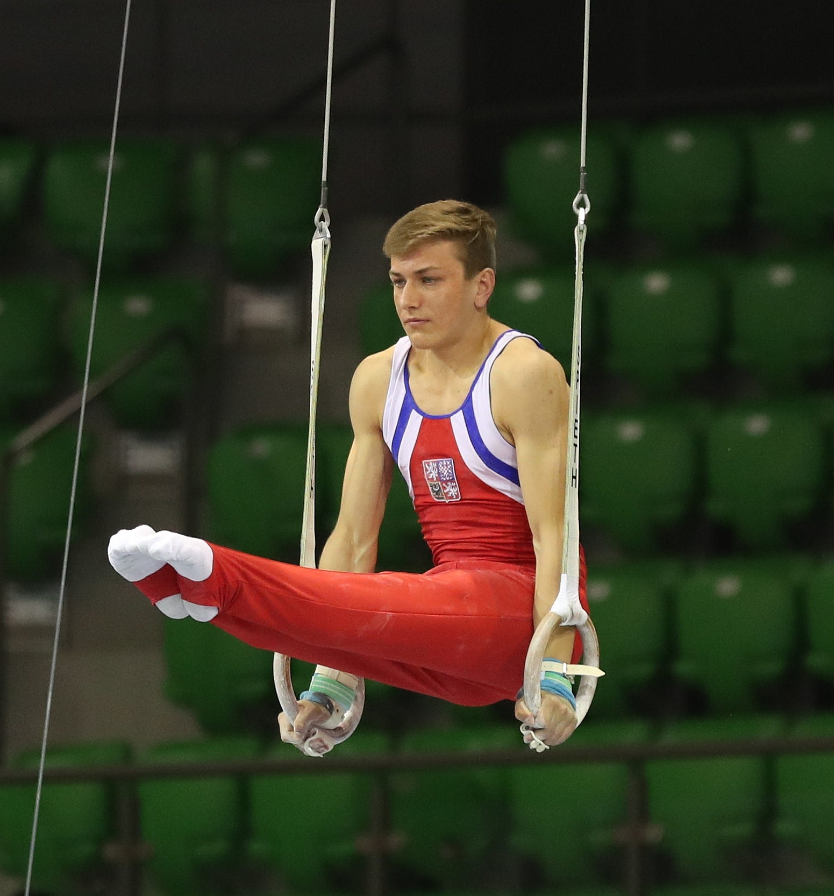
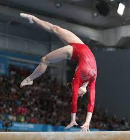
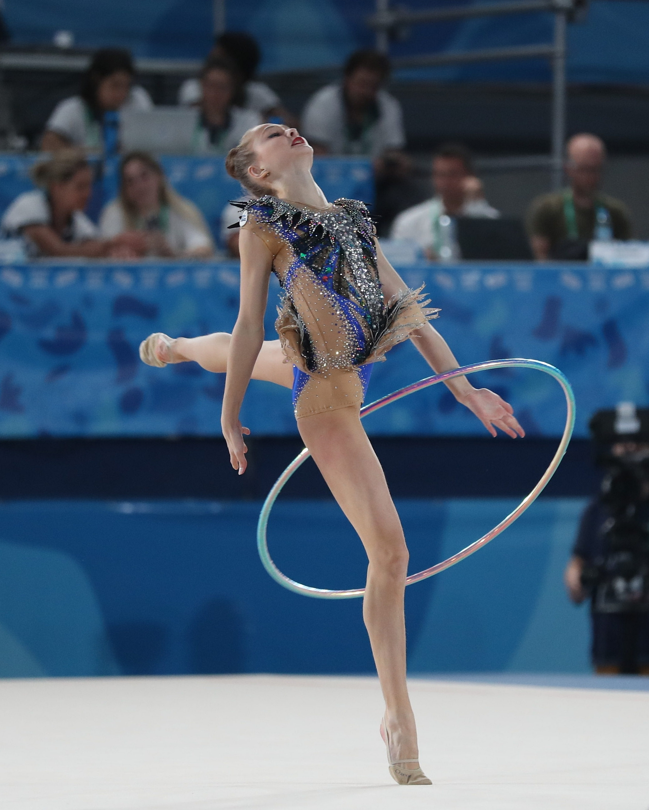
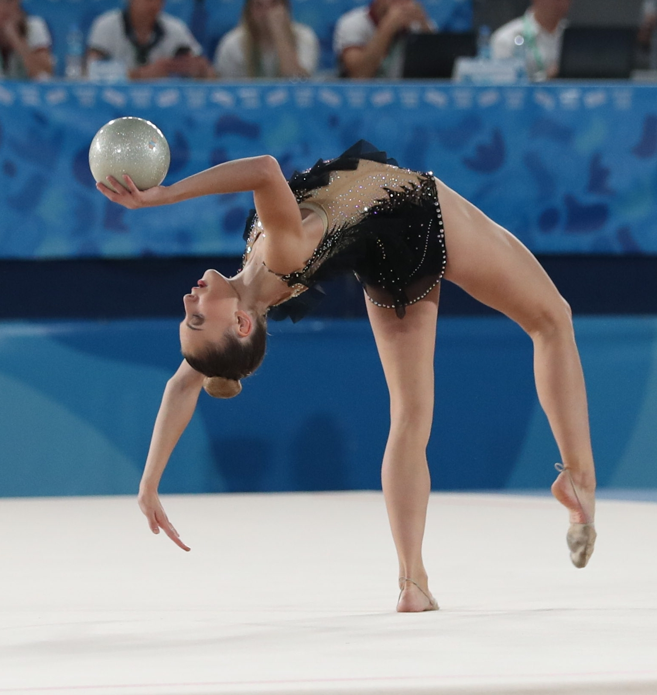
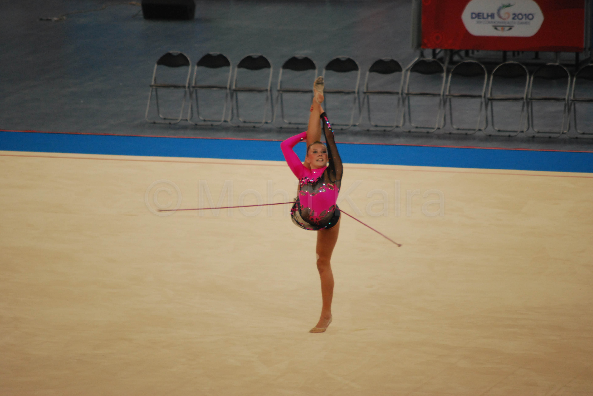
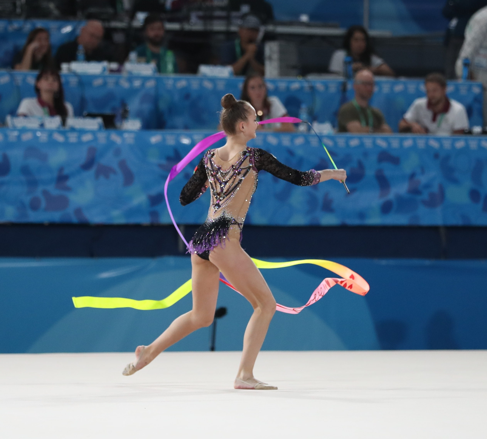
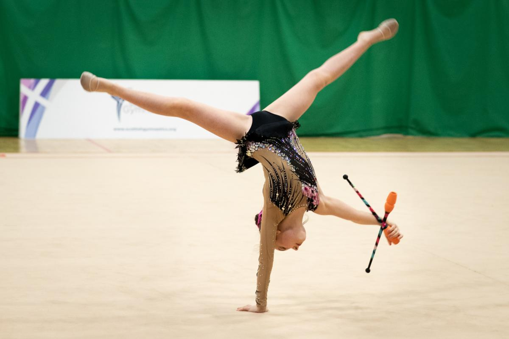

All About Gymnastics
A bit about Gymnastics
Gymnastics is a sport that requires balance, strength, flexibility, agility, coordination, and endurance. It involves performing a series of movements such as flips, twists, turns and jumps on various apparatus like the balance beam, bars, vault, and floor mat. Gymnastics is a highly skilled and physically demanding sport that requires years of training and practice to perfect. It is a popular sport around the world, with competitions held at local, national, and international levels. Gymnastics is not only a sport but also a form of art that showcases the beauty of human movement and athleticism. There are 3 main types of gymnastics, Artistic, rhythmic and trampoline.
History of Gymnastics
Gymnastics has a long and fascinating history that dates back to ancient Greece. The word "gymnastics" comes from the Greek word "gymnos," which means "naked." This is because the ancient Greeks performed gymnastics in the nude.
The first recorded gymnastics competition was held in Athens in 776 BC. The competition was part of the first Olympic Games and included events like running, jumping, wrestling, and boxing. Gymnastics continued to be an important part of the Olympic Games throughout ancient Greece.
During the Middle Ages, gymnastics fell out of favour, but it was revived in the 19th century. This was thanks in part to the work of Friedrich Ludwig Jahn, a German physical educator who is considered the father of modern gymnastics. Jahn developed a series of exercises to help strengthen the body and improve overall fitness.
Gymnastics grew in popularity throughout the 20th century, with the establishment of gymnastics clubs and the development of new equipment like the balance beam and the vault. Today, gymnastics is a popular sport and is practised by people of all ages around the world

Men's Artistic Gymnastics
Men's Artistic Gymnastics is a highly competitive and challenging sport that requires strength, flexibility, and precision. Gymnasts compete on six different apparatuses, including the floor exercise, pommel horse, still rings, vault, parallel bars, and horizontal bars. Each apparatus requires a unique set of skills and techniques, and gymnasts must be proficient in all of them to be successful.
Floor
The floor exercise is a fundamental apparatus in Men's Artistic Gymnastics. It involves a 12m x 12m square mat, where gymnasts perform a captivating routine showcasing their acrobatic and artistic prowess. This apparatus demands a delicate balance of strength, flexibility, agility, and coordination, as athletes execute powerful and precise movements. It requires excellent upper body strength to support the body during handstands and other strength elements incorporated into the routine. The gymnasts' lower body strength and explosiveness are crucial for executing dynamic tumbling passes with exceptional height and control.

Pommel Horse
The pommel horse is another apparatus used in men's artistic gymnastics. It consists of a metal frame with two handles, or pommels, on top, which the gymnast uses to perform a series of moves and skills, such as circles, flairs, and scissors. The pommel horse requires a great deal of balance, coordination, and core strength, and is often considered one of the most challenging events in men's gymnastics.

Rings
The rings are another apparatus used in men's artistic gymnastics. They consist of two wooden rings suspended from straps, which the gymnast uses to perform a variety of strength-based skills, such as holds, swings, and rotations. The rings require a great deal of upper body strength, control, and stability, and are often considered one of the most demanding events in men's gymnastics.

Vault
The vault is another apparatus used in men's artistic gymnastics. It consists of a runway leading up to a springboard, which the gymnast uses to propel themselves onto a vaulting table. From there, they perform a variety of skills, including twists, flips, and somersaults. The vault requires a great deal of speed, power, and precision, and is often considered one of the most challenging events in men's gymnastics.

Parallel Bars
Parallel bars are an apparatus used in men's artistic gymnastics. It consists of two parallel wooden bars that are suspended from a metal frame. The gymnast uses the bars to perform a variety of skills, including swings, handstands and flips. The parallel bars require a great deal of upper body strength and coordination. They are often considered one of the most difficult events in men's gymnastics.

High Bar
The high bar is another apparatus used in men's artistic gymnastics. It consists of a single horizontal bar that is suspended from a metal frame. The gymnast uses the bar to perform a variety of skills, including releases, swings, and twists. The high bar also requires a great deal of upper-body strength and coordination and is often considered one of the most exciting events in men's gymnastics.

How Men's Artistic Gymnastics is Judged
When judging men's artistic gymnastics, judges take into account a variety of factors to determine the final score. These factors include the difficulty of the routine and the execution of the routine. The execution score in men's artistic gymnastics is determined by a panel of judges who evaluate the athlete's performance based on various factors such as technique, form, and precision. The score ranges from 0 to 10, with deductions for mistakes and imperfections in the routine. It plays a crucial role in determining the overall score and ranking of the gymnast. The difficulty score is another important factor that the judges consider when evaluating a gymnast's performance in men's artistic gymnastics. This score reflects the level of difficulty of the routine and is determined by the types of skills and combinations of movements performed by the athlete. The difficulty score is added to the execution score to determine the final score for the routine. Judges carefully assess each gymnast's performance to ensure a fair and accurate score is given.
For more info on Men's artistic gymnastic rules, check out their code of points!
Women's Artistic Gymnastics
Women's artistic gymnastics is a highly competitive and demanding sport that requires strength, agility, flexibility, and grace. It involves a series of athletic events performed on a variety of apparatus, including the balance beam, uneven bars, floor exercise, and vaulting table. Athletes perform a combination of acrobatic and dance movements, showcasing their skills and physical abilities to judges who award points based on their level of difficulty and execution. Women's artistic gymnastics has become increasingly popular in recent years, with many young girls and women taking up the sport as a way to challenge themselves and achieve their athletic goals.
Vault
The vault is a powerful and dynamic apparatus that requires a combination of speed, strength, and precision. Gymnasts sprint down a runway, perform a springboard jump onto the vaulting table, and execute various flips, twists, and rotations before landing on the other side.

Uneven Bars
The uneven bars routine is a thrilling display of swinging, releasing, and transitioning between the high and low bars. Gymnasts perform a variety of elements, including giants (swings in a full circle around the bar), pirouettes, releases (letting go of the bar and re-grasping), and complex bar-to-bar transitions. The routine demands a high level of upper body and core strength, as well as impeccable timing and coordination.

Balance Beam
The balance beam routine is a true test of a gymnast's mental and physical prowess. Performing on a narrow beam just 10 centimetres wide requires exceptional balance, concentration, and control. Gymnasts execute a series of acrobatic skills, leaps, jumps, turns, and dance elements while maintaining poise and steadiness.

Floor
The floor exercise routine allows gymnasts to showcase their athleticism, creativity, and artistic expression. This routine is performed on a spring-loaded floor mat, which helps gymnasts achieve impressive tumbling passes. Gymnasts choreograph a combination of acrobatic skills, such as flips, twists, and somersaults, along with dance elements and expressive movements. The routine is performed to music and highlights the gymnast's individual style and personality.

How Women's Artistic Gymnastics is Judged
Women's artistic gymnastics is a sport that is judged based on a variety of factors. One of the primary factors that judges consider is the execution of each skill performed. This involves evaluating the athlete's form and technique, looking for clean lines and proper execution of each movement. Judges also consider the difficulty level of each routine, with more complex skills and combinations earning higher scores. In addition to execution and difficulty, judges also assess the artistry and composition of each routine. This involves evaluating the athlete's creativity, originality, and ability to seamlessly transition between skills. Judges look for unique and innovative ways to showcase their skills, as well as the overall flow and cohesiveness of the routine. By evaluating each routine based on these various factors, judges are able to provide a fair and comprehensive assessment of the athlete's abilities and performance.
For more info on Women's Artistic Gymnastic rules, check out their code of points!
Rhythmic Gymnastics
Rhythmic gymnastics is a beautiful and graceful sport that combines dance, gymnastics, and ballet with the use of various hand-held apparatuses such as hoops, balls, ropes, and ribbons. It requires a high level of flexibility, coordination, and balance, as well as artistic expression and musicality. Rhythmic gymnasts perform routines that showcase their skills and creativity, often accompanied by music that enhances their movements. It is a sport that requires both physical and mental discipline and is enjoyed by athletes and spectators alike.
Hoop
The hoop is one of the hand-held apparatuses used in rhythmic gymnastics. It is a circular hoop made of plastic, typically 80-90 centimetres in diameter. Rhythmic gymnasts use the hoop in their routines to perform a variety of movements and tricks, such as spins, throws, and catches, that demonstrate their flexibility, coordination, and artistic expression.

Ball
In rhythmic gymnastics, the ball is another hand-held apparatus used in routines. It is a small, lightweight ball made of rubber or synthetic material, typically 18-20 centimetres in diameter. Rhythmic gymnasts use the ball to perform a variety of movements and tricks, such as throws, catches, and balances, that demonstrate their grace, precision, and control.

Rope
The rope is also a hand-held apparatus used in rhythmic gymnastics routines. It is a long, slender rope made of hemp or synthetic material, typically 2.5-3 meters in length. Rhythmic gymnasts use the rope to create shapes and patterns, as well as to perform jumps, swings, and rotations, that showcase their strength, flexibility, and coordination.

Ribbon
Ribbon is another hand-held apparatus used in rhythmic gymnastics routines. It is a long, thin ribbon made of satin or similar material, typically 4-6 meters in length. Rhythmic gymnasts use the ribbon to create flowing movements and patterns that showcase their grace, fluidity, and control. Like the rope, the ribbon requires a great deal of skill and practice to master.

Clubs
The clubs are one of the five apparatuses used in rhythmic gymnastics. They are typically made of plastic and are about 40-50 cm in length. The gymnast uses the clubs to perform a variety of movements, including throws, catches, and rolls.

How Rhythimic Gymnastics is judged
Rhythmic gymnastics is judged based on a combination of technical skill and artistic expression. Judges evaluate the execution of each routine, including the difficulty and precision of the movements, as well as the overall performance, such as the gymnast's expression, musicality, and creativity. Points are deducted for mistakes, such as dropping an apparatus or losing balance.
For more rules on Rhythmic Gymnastics, check out their code of points!